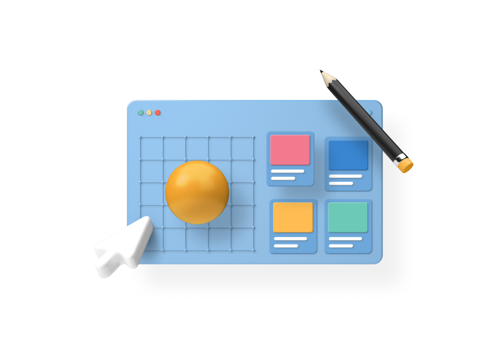

Bento.
Drag & Drop 3D Visual
Design System

Global Digital
Agency of Record

5 Years of Digital
Marketing Excellence

By the Numbers.
20
Pre-build Scenes
Bento is the first fully editable, 3D visual design system with global auto-updatable style guides built right in Figma.
40
Scene Objects
Bento is the first fully editable, 3D visual design system with global auto-updatable style guides built right in Figma.